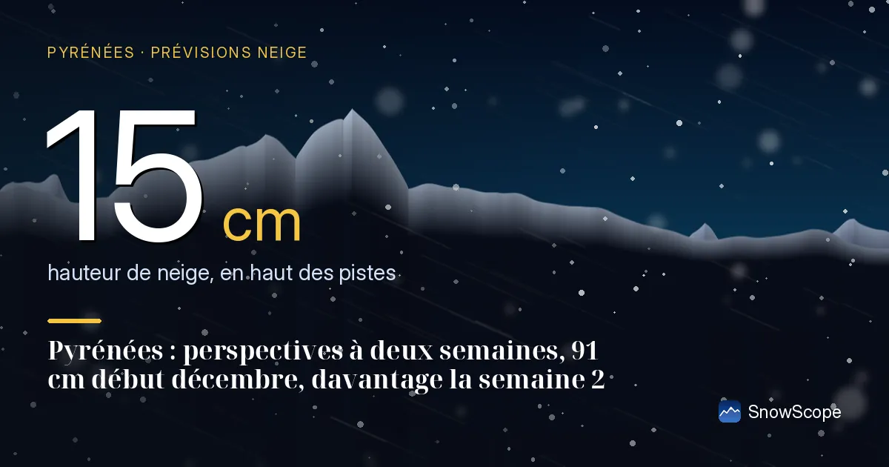

Pyrénées : perspectives à deux semaines, 91 cm début décembre, davantage la semaine 2
La neige nouvelle arrivera aux Pyrénées en deux vagues sur les deux prochaines semaines, à peu près moitié du total (49 %) arrivant le 26 novembre. Les pentes les plus hautes, au-dessus de 2 500 m, accumuleront environ 44 cm en moyenne sur toute la chaîne, tandis que les terrains plus bas en reçoivent bien moins.
Consultez les prévisions neige en temps réel pour Cauterets Cirque du Lys sur l'application SnowScopeHauteurs de neige, alertes poudreuse et carte 3D, gratuitement.
Quand tombe la neige : semaine 1 ou semaine 2 ?
La première semaine (20–26 novembre) apporte la première vague. Pendant cette période, notre modèle de neige montre que 44 cm s'accumuleront sur les pentes hautes du Cirque du Lys à Cauterets, tandis que Gavarnie-Gèdre en recevra 50 cm. Le jour le plus chargé de la semaine 1 est 25–26 novembre, quand Gavarnie-Gèdre voit 15 cm et Cauterets reçoit 12 cm.
La semaine 2 (27 novembre–3 décembre) sera plus calme mais régulière. Les totaux de neige sont plus modestes jour après jour, mais ils s'accumulent : Cauterets gagnera 29 cm en semaine 2, et Gourette en reçoit 35 cm. Le jour de pic final est 3 décembre, quand Gourette et Ordino-Arcalis dominent avec jusqu'à 12 cm.
| Station | Hauteur de neige | Neige fraîche, 72 h | Attendu, jours suivants | Sommet |
|---|---|---|---|---|
| Cauterets Cirque du Lys | 9 cm | 8 cm | 22 cm | 2 420 m |
| Gourette | 9 cm | 8 cm | 20 cm | 2 453 m |
| Gavarnie-Gèdre | 3 cm | 4 cm | 10 cm | 2 283 m |
| Piau-Engaly | 15 cm | 13 cm | 17 cm | 2 527 m |
| Astun | 3 cm | 6 cm | 15 cm | 2 272 m |
| Grand Tourmalet | 6 cm | 7 cm | 14 cm | 2 464 m |

L'altitude compte : où le manteau est le plus épais
Les montagnes stockent l'essentiel de l'eau sous forme de neige en altitude. Entre 2 500 et 3 000 m, le modèle estime une médiane de 44 cm sur toute la chaîne pyrénéenne en 14 jours, les prévisions du quartile supérieur atteignant 60 cm. C'est là que le manteau neigeux se constitue le plus régulièrement.
À 2 000–2 500 m (la bande d'altitude moyenne de nombreuses stations), on peut s'attendre à 32 cm comme résultat typique, bien que certaines séries du modèle affichent 51 cm. Sous 1 500 m, la neige est rare : seulement 1 cm de médiane à 1 000–1 500 m, avec forte incertitude. L'enneigement en début de saison aux basses altitudes est mince et risqué.

Sur quoi les modèles s'accordent et divergent
Le CEPMMT IFS et le NOAA GFS s'accordent sur l'arrivée de neige. Ils suivent les mêmes systèmes météorologiques. Le désaccord apparaît dans les détails : à Gourette, un modèle voit aussi peu que 27 cm total en 14 jours, tandis que l'autre en prédit 112 cm. Cet écart reflète les limites naturelles de la prévision à deux semaines.
Les signaux les plus fiables concernent le milieu de la semaine 1 (autour de 24–26 novembre) et début décembre (1–3 décembre). L'écart entre les modèles se réduit à ces dates.

L'eau stockée en montagne
Le 22 novembre, dans trois jours, la prévision montre que 1 710 km² des Pyrénées porteront de la neige, en hausse nette par rapport aux 560 km² deux jours auparavant. Le 3 décembre, cette zone passe à 3 160 km². Plus important encore, 1 253 km² contiendront 50 cm ou plus — assez pour commencer à soutenir le ski et alimenter les écoulements hivernaux. La surface totale de la chaîne est de 70 044 km², donc l'enneigement fiable couvrira environ 2 % du terrain.
En termes d'eau, 44 cm à 2 500–3 000 m représente un stockage important pour une chaîne de montagne méditerranéenne où l'humidité hivernale est clairsemée. Les stations de ski dépendent de cette bande d'altitude ; les pentes basses restent vulnérables.
Conseils aux skieurs
- Skiez au-dessus de 2 000 m pour le meilleur rapport neige-roche durant les deux prochaines semaines. Le terrain au-dessus de 2 500 m est le plus sûr en début de saison.
- Notez 25–26 novembre (pic de semaine 1) et 3 décembre (pic de semaine 2) comme les deux meilleures journées de neige nouvelle. Prévoyez vos sorties ou descentes pour les jours suivants, une fois la neige tassée.
- Avant une sortie hors-piste, consultez le bulletin d'avalanche officiel des Pyrénées. La neige fraîche sur pentes raides augmente l'instabilité, surtout où le manteau est mince.
- Attendez-vous à du tassement ou regel sur les pentes sous 1 500 m ; de la glace peut se former sous toute neige nouvelle si les températures sont proches de zéro.
- Utilisez l'appli SnowScope pour zoomer sur les pentes hautes de votre station choisie et suivre comment la prévision évolue jour après jour.
À propos de ces chiffres
Les hauteurs de neige des stations sont la neige la plus épaisse sur le haut du domaine, d'après le modèle de neige SnowScope (environ 1 km, calcul du 18 novembre) ; ce sont des estimations pour une zone, pas une mesure en un point. Les valeurs des stations de mesure sont mesurées à la date indiquée. Les prévisions peuvent changer. Consultez toujours le bulletin d'avalanche officiel avant le hors-piste.
Bulletins d'avalanche officiels: Météo-France / Meteocat / AEMET
Citer ce bulletin
Pour la recherche, l'enseignement ou la presse : chiffres et graphiques réutilisables librement sous CC BY 4.0 avec cette citation.
SnowScope (2026), Pyrénées : perspectives à deux semaines, 91 cm début décembre, davantage la semaine 2, https://snowscope.app/blog/fr/2026/11/pyrenees-2-week-snow-forecast-maps-19-november-2026.html, consulté le 2026-11-19
SnowScope (Atlas Labs). (2026, November 19). Pyrénées : perspectives à deux semaines, 91 cm début décembre, davantage la semaine 2. SnowScope snow reports. https://snowscope.app/blog/fr/2026/11/pyrenees-2-week-snow-forecast-maps-19-november-2026.html
BibTeX
@misc{snowscope2026pyrenees2weeksnowforecas,
author = {{SnowScope (Atlas Labs)}},
title = {Pyrénées : perspectives à deux semaines, 91 cm début décembre, davantage la semaine 2},
year = {2026},
month = nov,
howpublished = {\url{https://snowscope.app/blog/fr/2026/11/pyrenees-2-week-snow-forecast-maps-19-november-2026.html}},
note = {Published 2026-11-19 12:26 UTC; accessed 2026-11-19}
}· CC BY 4.0 · Méthodes, données et outils →
Suivre Cauterets Cirque du Lys
Gratuit : un message quand la neige arrive, et la météo chaque matin.
Autres bulletins neige

Cauterets propose 25 km de pistes pour 46 EUR, mais notre historique d'enneigement montre que la meilleure chance d'avoir de la neige est la dernière semaine de décembre.

Piau-Engaly domine la prévision avec 37 cm de neige fraîche d'ici le 13 novembre ; 24 cm sont attendus le 12 novembre.

Combien de temps les Pyrénées sont restées blanches chaque hiver depuis 2000-01, vu par satellite, et la hauteur de neige à 10 stations aux longues séries. Trois hivers maigres d'affilée ont pris fin en 2025-26 ; cet automne a commencé normalement.